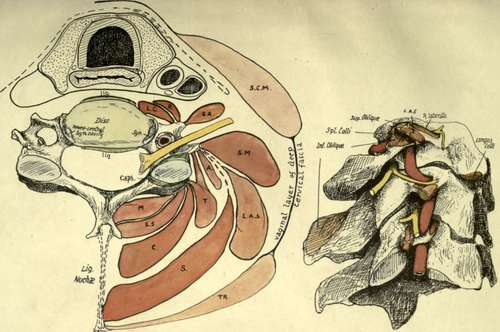
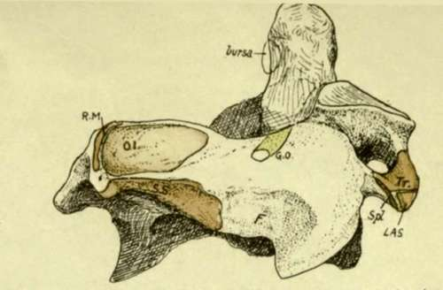
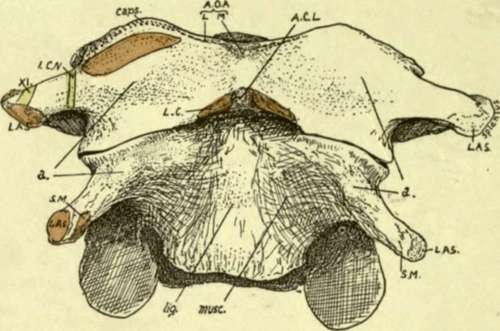

Detailed Consideration Of Cervical Vertebrae. Part 3
Description
This section is from the book "The Anatomy Of The Human Skeleton", by J. Ernest Frazer. Also available from Amazon: The anatomy of the human skeleton.
Detailed Consideration Of Cervical Vertebrae. Part 3
The three-sided spinal canal increases in size from the Axis to the fifth and then decreases, so corresponding with the position of the thickest part of the cervical enlargement of the cord. The front wall is the back ot the body, but this is covered in the recent state by the posterior common ligament : deep to the ligament, veins issue from the back of the body (Venae basis vertebrae) by foramina which tend to be paired but may be multiple.
Fig. 17.-1. Scheme to show the planes of muscles in the neck and their relation to the vertebra and to each other. On the costal process are 1 < Longus colli ; K, Rect. ant. major; SA, Seal, anticus ; these separate the process from the carotid sheath which rests by its outer part on Scalenus anticus or, above the level of this muscle, on the issuing nerves and Seal, medius. Scalenus medius (sa/) and Lev. ang. scapulae (LAS) arise most externally from the posterior tubercle, while the post-vertebral muscles are attached further back and further in. These are attached in order, the superficial outside the deep ; A is the plane of Cerv. ascendens; T of Transversus and Trachelomastoid ; S, Splenius ; C, Com plexus ; ss. Semispinalis ; and af, Multifidus. Deep to the plane of Trachelomastoid the muscles are attached to the articular processes. SCM. Sternomastoid, and T, Trapezius, are in the plane of the deep enclosing or vaginal layer of fascia of the neck. 2. The first three cervical vertebrae, showing tin-relations to them of the nerves, muscles, and vertebral artery. The muscles are named on the atlas, but the drawing is for comparison with Figs. 15, 18, and 20.
Fig. 18.-Postero-lateral view of axis. 01, Inferior oblique; SS, Semispinals; the area for Multifidus is on the under surface below Semispinalis ; RM, Rectus post, major. F is a roughened area, not always very evident, which is not due to the attachment of a muscle but to the presence of a hbro-fatty pad which lies between the diverging Semispinalis and Inferior oblique to allow the latter to follow the movements of the head ; the post, primary div. of the second cerv. nerve (great occipital, GO) runs above this pad below the Inferior oblique to turn up round this muscle, and thus rests on the lamina. On the transverse process are : Tr, Intertransverse ; LAS, Lev. ang. scapula? ; Spl, Splenius colli. Compare Figs. 15 and 17.
Fig. 19.-Front view of atlas and axis. The rudiments of the anterior tubercles are shown at a. On the axis the narrow ligamentous area (lig.) indicates the narrowing of the ant. common lig. to its attachment on the atlas at ACL ; the concave areas on each side of it are filled by Rect. ant. major, Longus colli also passing up deep to this to insertion (LC) on atlas. On the atlas the spinal accessory (XI) and suboccipital (iCN) nerves cross the transverse process ; internal to the last the Rectus anticus minor arises. The tip of the odontoid is seen above the anterior arch. AO A, anterior occipito-atloid lig., lateral and middle. The hollow between a and the anterior tubercle is filled by Rect. anticus major.
It remains to consider the upper two vertebrae.
The Axis, on its front surface, shows a narrow ligamentous area which indicates the cord-like nature of the upper part of the anterior common ligament : outside this the muscular hollow is overhung above and externally by the front edge of the upper articular process, roughened by the capsular ligament. On the base of the transverse process, where it projects from under the articular edge, is an ill-defined tubercle, to which some oblique fibres of the capsule are attached.
This tubercle, seen in Figs. 16 and 19, is the proper " anterior tubercle " of the transverse process, and the quasi-process projecting from it is really the costotransverse bar connecting this tubercle with the true transverse element behind ; so the tip is only the " posterior tubercle." The correspondence of the parts of the " transverse processes " in this vertebra and the next are shown in Fig. 15, B, and it is evident that the intertransverse muscle on the top of the second process is only the representative of the posterior intertransverse on the third, while the anterior intertransverse is wanting * in the former case ; thus the anterior primary division of the second nerve, descriptively issuing " internal to the intertransverse muscles," is really in the same plane as the lower nerves that come out between them, and lies, as they do, on the costo-transverse bar. The nerves are shown, with their relations to the artery, in this figure and in Fig. 17.
The oblique ligamentous fibres correspond with the upper bands of the stellate ligaments of the rib-heads in the thorax, and lie in front of the articulation, which we have seen to be of the nature of a costo-central joint.
The tip of the transverse process has a sharp posterior hp : the aponeurosis of the Splenius colli is attached to this. In front of this and rather above it, on the tubercle, is a rounded small surface for Lev. anguli scapulae, and internal to this a slight ridge marks the origin of the top fibres of Scalenus medius. The intertransverse muscle is attached to the top of the tubercle and true transverse limb, extending slightly on to the costo-transverse bar.
The groove on the neural arch behind and outside the upper articular area is for the anterior primary division of the second cervical nerve : the posterior division, or great occipital, crosses the arch a little further back, lying on it under cover of the inferior oblique (see Fig. 18). Two areas can be seen and felt on the surface of the spine and lamina : one concave, and looking upwards and outwards on the spine and extending forward about half-way to the articular surface, the other a rough and narrower area looking downwards and outwards and extending from the lower margin of the spine toward the lower articular eminence. The upper one gives origin to the Inferior Oblique, and the lower affords insertion to Semispinalis colli and Multifidus spinae, the last named also reaching the lower aspect of the lamina : this makes the lamina thick below, giving it a three-sided section, with a sharp upper border for attachment of lig. subflavum. The crest on the upper and back aspect of the spine gives origin to the Rectus posticus major.
The neural aspect of the laminae shows a transverse line above its lower border for deep fibres of the lig. subflavum.
The back of the body joins the back of the odontoid process at the level of a ridge connecting the margins of the articular surfaces ; a corresponding ridge may be visible in front.
* There are muscle fibres of this group to be found sometimes attached to the " anterior tubercle," internal to the issuing nerve. Usually these form an oblique ligamentous band.
The back of the body exhibits two venous foramina with a median ridge, and is tuberculated for the attachment of the Membrana tectoria, and accessory alto-axoid ligaments : the crus inferior of the cruciate ligament is attached to the transverse line and the bone below this.
The odontoid process articulates in front with the arch of the Atlas and has a cartilage-covered facet upon it. Its sides are pierced by small foramina, and its posterior surface is grooved by the transverse band of the lig. cruciatum : a bursa on cartilage intervenes, which may extend out on the front of the ligament and communicate with the occipito-atloid joint. The top of the process is divided by a triradiate line into three areas, of which the front is for the median, and the two posterior for the lateral occipito-odontoid ligaments.
The process, being the separated body of the atlas, is ossified from a bilobed or double centre distinct from that of the true body of the axis, and a plate of cartilage separates the two elements at birth. A few years later the spreading ossification involves the peripheral parts of the cartilage, but the central portion remains as cartilage until past middle life. The transverse line mentioned as showing the limits of the process behind is below the level of the inner part of the articular surface, and many bones indicate on inspection what is suggested by this fact, that the inner corner of the articular surface is ossified from the odontoid centres. Possibly there is an occipital body included in the apex of the proce: s.
At birth the bone is in four pieces joined by cartilage-the dens, the true body, and the two halves of the neural arch. These are consolidated by the sixth or seventh year. The lines of junction of the neural centres with those of the true body lie below the levels of the pedicles and transverse processes.
Continue to: